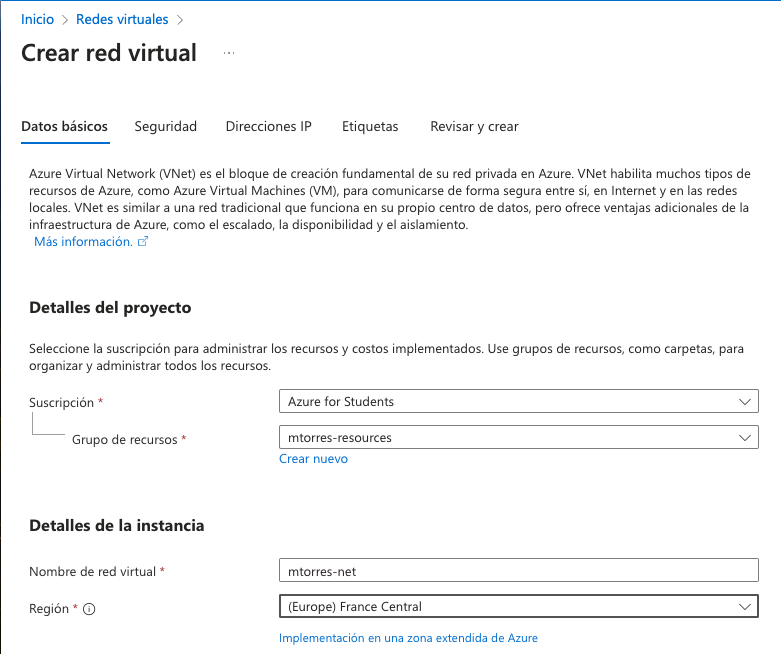
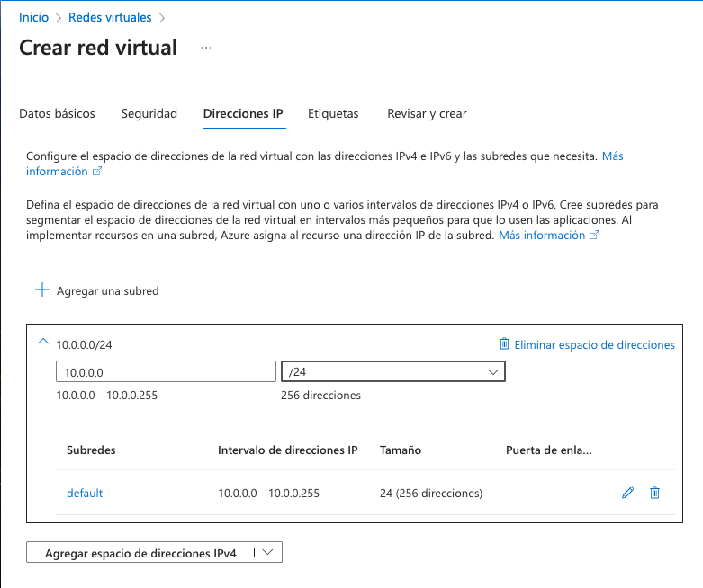
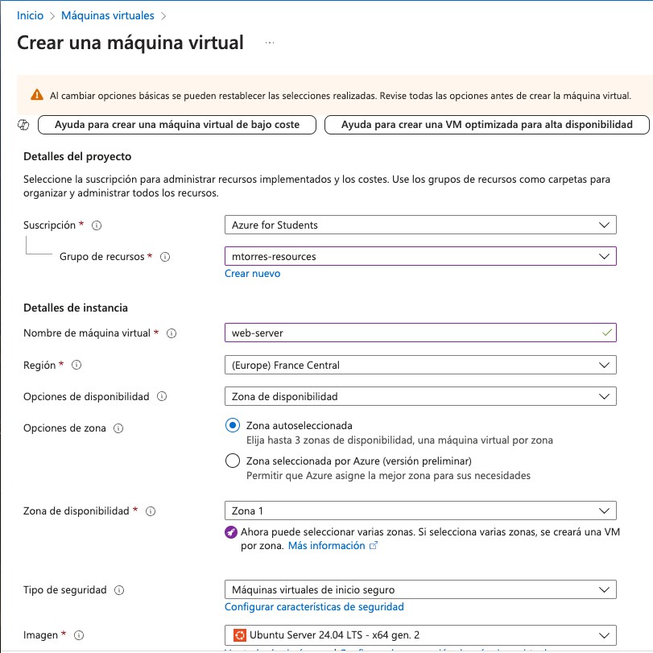
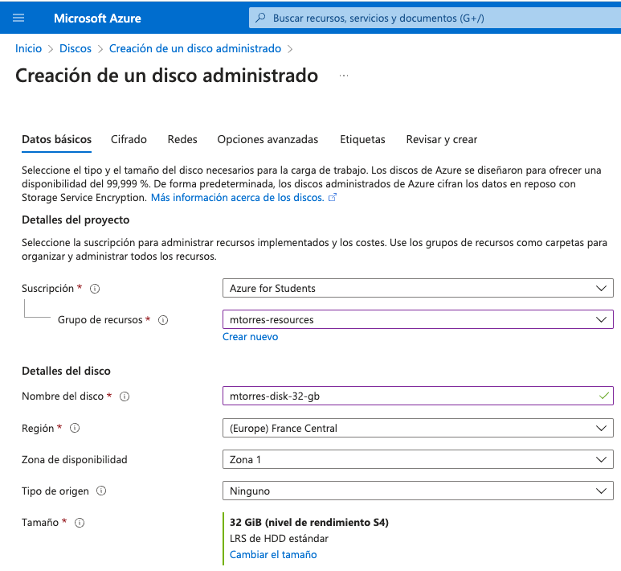
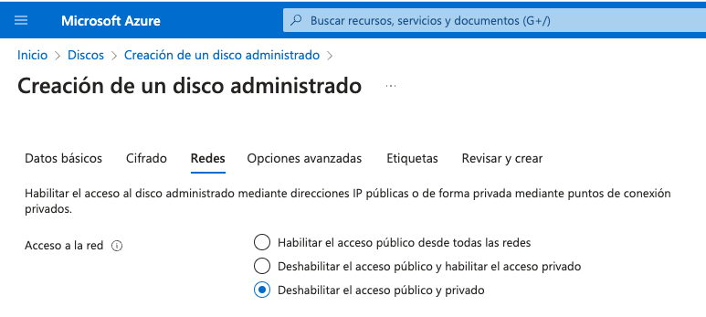

Resumen
En este tutorial se describe cómo crear un servidor web en Azure. Se partirá de cero y se creará la infraestructura necesaria para alojar una página web. Básicamente, se creará una red y una máquina virtual. La máquina virtual se configurará en el arranque con un script de inicio que instalará un servidor web Apache. Además, se abrirán los puertos necesarios en el cortafuegos de Azure para permitir el acceso a la máquina virtual por SSH y a la página web desde un navegador. También se presentará Azure Cloud Shell, un shell interactivo que se puede utilizar para administrar los recursos de Azure. Por último, se mostrará cómo crear un disco adicional y conectarlo a la máquina virtual.
-
Crear una red virtual en Azure.
-
Crear una máquina virtual en Azure configurada con un script de inicio.
-
Añadir claves SSH a la máquina virtual.
-
Abrir los puertos necesarios en el cortafuegos de Azure.
-
Activar Azure Cloud Shell.
-
Crear un disco adicional y conectarlo a la máquina virtual.
1. Introducción
En este tutorial se desribe cómo crear desde cero una máquina virtual en Azure de recursos reducidos para ilustrar cómo utilizar un cloud público como Azure para mostrar la potencia y las ventajas de la computación en la nube. Para ello, será necesario disponer de unos recursos previamente configurados, como son un grupo de recursos y una red virtual. La máquina virtual se configurará en el arranque con un script de inicio que instalará un servidor web Apache. Además, se abrirán los puertos necesarios en el cortafuegos de Azure para permitir el acceso a la máquina virtual por SSH y a la página web desde un navegador. También se presentará Azure Cloud Shell, un shell interactivo que se puede utilizar para administrar los recursos de Azure. Por último, se mostrará cómo crear un disco adicional y conectarlo a la máquina virtual.
2. Preparación de la infraestructura básica
Para comenzar, es necesario disponer de una cuenta en Azure. Si no se dispone de una, se puede crear una cuenta gratuita en Azure como estudiante de la UAL en este enlace.
Una vez se dispone de una cuenta en Azure, se debe crear un grupo de recursos y una red virtual.
2.1. Creación de un grupo de recursos
Un grupo de recursos es un contenedor lógico en el que se implementan y se administran los recursos de Azure (p.e. máquinas virtuales, bases de datos, aplicaciones web, etc.). Cuando se crea un recurso en Azure, se debe asignar a un grupo de recursos. Los recursos de Azure se pueden implementar en diferentes regiones de Azure. Un grupo de recursos puede contener recursos que se encuentran en diferentes regiones, pero todos los recursos de un grupo de recursos se encuentran en una única región.
Para crear un grupo de recursos, se debe seguir los siguientes pasos:
-
Seleccionar la opción Grupos de recursos en el menú de la izquierda o buscar Grupos de recursos en la barra de búsqueda.
-
Hacer clic en el botón
+ Crear. -
En el formularion indicaremos:
-
Suscripción: Seleccionar la suscripción de Azure for Students.
-
Grupo de recursos: Introducir un nombre para el grupo de recursos (p.e. el nombre de usuario de la UAL
mtorres). -
Región: Seleccionar una región cercana a la ubicación del usuario (p.e.
(Europe) France Central).
-
-
Hacer clic en el botón
Revisar y crear.
2.2. Creación de una red virtual
Una red virtual es una red que se ha creado en Azure y que se puede utilizar para alojar recursos de Azure. Una red virtual es similar a una red tradicional que se puede utilizar en un centro de datos físico, pero con las ventajas de la escalabilidad y la disponibilidad de Azure.
Para crear una red virtual, una vez que se ha creado un grupo de recursos, se deben seguir los siguientes pasos:
-
Seleccionar la opción Redes virtuales en el menú de la izquierda (si no está disponble, seleccionar
Crear un recurso | Redes | Red virtual | Crear) o buscar Redes virtuales en la barra de búsqueda. -
Hacer clic en el botón
+ Crear red. -
En el formulario indicaremos lo siguiente en la pestaña de Datos básicos:
-
Suscripción: Seleccionar la suscripción de Azure for Students.
-
Grupo de recursos: Seleccionar el grupo de recursos creado anteriormente. Si no se ha creado un grupo de recursos, se puede crear uno en este paso sobre la marcha.
-
Nombre: Introducir un nombre para la red virtual (p.e.
mtorres-net). -
Región: Seleccionar la región del grupo de recursos (p.e.
(Europe) France Central).
 -
-
En la pestaña de Direcciones IP, se puede dejar la configuración por defecto. En nuestro caso, configuraremos un espacio de direcciones más restringido con CIDR
10.0.0.0/24 -
Crear la red virtual haciendo clic en el botón
Revisar y crear.
3. Creación de una máquina virtual
Una vez que se ha creado un grupo de recursos y una red virtual, se puede proceder a crear una máquina virtual. Para ello, se deben seguir los siguientes pasos:
-
Seleccionar la opción Máquinas virtuales en el menú de la izquierda o buscar Máquinas virtuales en la barra de búsqueda.
-
Hacer clic en el botón
+ Creary seleccionarMáquina virtual de Azure. -
En el formulario indicaremos lo siguiente en la pestaña de Datos básicos:
-
Suscripción: Seleccionar la suscripción de Azure for Students.
-
Grupo de recursos: Seleccionar el grupo de recursos creado anteriormente.
-
Nombre: Introducir un nombre para la máquina virtual (p.e.
web-server). -
Región: Seleccionar la región del grupo de recursos (p.e.
(Europe) France Central). -
Imagen: Seleccionar una imagen de máquina virtual. En nuestro caso, seleccionaremos una imagen de Ubuntu 24.04 LTS.
-
Arquitectura: Seleccionar una arquitectura de máquina virtual. En nuestro caso, mantendremos la x64.
-
Tamaño: Seleccionar un tamaño de máquina virtual. En nuestro caso, seleccionaremos un tamaño de máquina virtual muy reducido (p.e.
B1 scon 1 vCPU y 1 GB de RAM). -
Tipo de autenticación: Mantenemos
Clave pública SSH. -
Nombre de usuario: Nombre de usuario de acceso a la máquina virtual (p.e.
mtorres). -
Origen de clave pública SSH: Usaremos una clave pública existente (p.e. la que usemos para acceder a OpenStack). Si no se dispone de una clave pública, se puede crear una en este paso.
-
Clave pública SSH: Introducir la clave pública SSH.
-
Puertos de entrada p´blicos: Seleccionar
Permitir los puertos seleccionadosy añadir el puerto 80 (HTTP) y el puerto 22 (SSH).
 -
-
En la pestaña de Discos, se puede dejar la configuración por defecto con un tamaño de disco de 30 GB.
ImportantAl configurar el disco de la máquina virtual seleccionaremos la casilla
Eliminar disco al eliminar la máquina virtualpara que se elimine el disco de la máquina virtual cuando se elimine la máquina virtual y evitar cargos adicionales. En otras situaciones, se puede dejar el disco para poder reutilizarlo en otra máquina virtual. -
En la pestaña de Redes, se puede dejar la configuración por defecto. En nuestro caso, seleccionaremos la red virtual creada anteriormente. Aparecerá seleccionada la creación de una IP pública y aparecerán los puertos de entrada públicos que hemos configurado anteriormente.
ImportantAl configurar la red de la máquina virtual seleccionaremos la casilla
Eliminar IP pública y NIC cuando se elimine la VMpara que se elimine la IP pública y la interfaz de red de la máquina virtual cuando se elimine la máquina virtual y evitar cargos adicionales. En otras situaciones, se puede dejar la IP pública y la interfaz de red para poder reutilizarla en otra máquina virtual. -
En la pestaña
Opciones avanzadasconfiguraremos el script de inicio de la máquina virtual para instalar Apache. Para ello, activamos la opciónHabilitar datos de usarioy añadiremos el siguiente script en el cuadroDatos de usuario:#!/bin/bash apt-get update apt-get install -y apache2 -
Crear la máquina virtual haciendo clic en el botón
Revisar y crear.
|
Note
|
Es conveniente revisar las opciones ofrecidas en el resto de pestañas para conocer las opciones posibles de configuración de la máquina virtual y realizar los ajustes necesarios en función de las necesidades. |
Tras unos instantes, la máquina virtual estará creada y Azure nos mostrará un resumen de la máquina virtual creada. La máquina virtual estará en estado En ejecución y se podrá acceder a ella a través de SSH en la dirección IP que se ha asignado a la máquina virtual. Además, se podrá acceder a la máquina virtual a través de un navegador web en la dirección IP pública de la máquina virtual. El acceso al servidor web se podrá realizar a través de un navegador web pero tardará unos minutos en estar disponible debido a que tiene actualizar la lista de paquetes e instalar Apache.
3.1. Acceso por SSH mdiante una terminal
Para acceder por SSH a nuestra máquina virtual desde una terminal, deberemos contar con la clave privada que corresponde a la clave pública que hemos añadido a la máquina virtual. Desde una terminal, accederemos a la máquina virtual con el siguiente comando:
ssh [-i <archivo-clave-privada>] <username>@<ip-maquina-virtual>Donde <username> es el nombre de usuario que elegimos en la creación de la máquina virtual e <ip-maquina-virtual> es la dirección IP asignada a la máquina virtual. La opción -i se utiliza para indicar la clave privada que se utilizará para autenticarse en la máquina virtual. Si no se especifica, se utilizará la clave privada por defecto del usuario (normalmente ~/.ssh/id_rsa).
La figura siguiente muestra la conexión por SSH a la máquina virtual en una terminal mostrando el disco de la máquina virtual de 30 GB seleccionado en la creación de la máquina virtual.
|
Note
|
El disco de 4 GB que aparece en |
3.2. Acceso por SSH mediante Azure Cloud Shell
Azure Cloud Shell es un shell interactivo que se puede utilizar para administrar los recursos de Azure. Esta funcionalidad es muy útil, ya que permite el acceso SSH a la máquina virtual sin necesidad de un terminal ni nuestra clave SSH en ocasiones en las que no las tengamos a mano. Se puede acceder a Azure Cloud Shell desde el portal de Azure en la esquina superior derecha. Se puede seleccionar el tipo de shell (Bash o PowerShell) y se puede elegir el tipo de almacenamiento (temporal o persistente). Una vez seleccionadas las opciones, se puede acceder a Azure Cloud Shell.
Para activar Azure Cloud Shell, seleccionaremos la máquina virtual en el portal Azure y se mostrarán una serie operaciones y opciones. Seleccionaremos la opción Conectar y el botón Seleccionar del cuadro SSH mediante CLI de Azure. A la derecha se abrirá un cuadro de opciones de configuración y la IP de la máquina virtual. Habrá que activar la casilla de verificación para aceptar que se permite el cambio de IP, ya que es efímera y puede cambiar. La figura siguiente ilustra todas las opciones que se han de seleccionar.

A continuación, nos dará la bienvenida y tendremos que seleccionar si preferimos Bash o PowerShell. Seleccionaremos Bash. La figura siguiente muestra el cuadro de bienvenida de Azure Cloud Shell.
También tendremos que seleccionar una suscripción por si queremos almacenar los datos entre sesiones. La figura siguiente muestra la selección de la suscripción.
Una vez hechas todas estas selecciones, se abrirá una terminal en la parte inferior. La figura siguiente muestra la shell mostrando de nuevo los discos de la máquina virtual de 30 GB y el disco temporal de 4 GB.
3.3. Acceso al servidor web
La máquina virtual fue configurada en el arranque con un script de inicio que instaló un servidor web Apache. El servidor web Apache estará accesible mediante un navegador web en la dirección IP pública de la máquina virtual. La figura siguiente muestra la página de bienvenida de Apache en un navegador web.

4. Almacenamiento básico en Azure
Azure ofrece diferentes tipos de almacenamiento para satisfacer las necesidades de almacenamiento de los recursos de Azure. Hasta ahora, en este tutorial se ha utilizado el almacenamiento por defecto de la máquina virtual, que es un disco de 30 GB. Este disco es un disco persistente que se mantiene incluso cuando se apaga la máquina virtual. Azure ofrece la creación de discos adicionales, almacenamiento en archivos, almacenamiento en blobs, almacenamiento en tablas y almacenamiento en colas. Veamos cómo crear un disco adicional para almacenamiento de bloques que conectaremos a la máquina virtual.
4.1. Creación de un disco adicional
Para crear un disco adicional, se deben seguir los siguientes pasos:
-
Seleccionar la opción Discos en el menú de la izquierda o buscar Discos en la barra de búsqueda.
-
Hacer clic en el botón
+ Crear. -
En el formulario indicaremos lo siguiente en la pestaña de Datos básicos:
-
Suscripción: Seleccionar la suscripción de Azure for Students.
-
Grupo de recursos: Seleccionar el grupo de recursos creado anteriormente.
-
Nombre: Introducir un nombre para el disco (p.e.
mtorres-disk-32-gb). -
Región: Seleccionar la región del grupo de recursos (p.e.
(Europe) France Central). -
Tamaño (GiB): Seleccionar un tamaño de disco y un tipo de almacenamiento económico para esta prueba (p.e.
32 GiB HDD estándar).NoteEn función de la tecnología y el tamaño de disco seleccionado es posible que el disco pueda ser compartido entre varias máquinas virtuales.
La figura siguiente ilustra algunas de las opciones seleccionadas en la pestaña de opciones básicas de creación de discos
 -
-
Restringir el acceso público y privado desde redes al disco seleccionando la opción
Deshabilitar el acceso público y privadoen la pestaña deRedes. -
Crear el disco haciendo clic en el botón
Revisar y crear.
Tras unos instantes, el disco estará creado y Azure nos mostrará un resumen del disco creado.
4.2. Conexión de un disco adicional a una máquina virtual
Una vez creado el disco, se puede conectar a una máquina virtual. Para ello, se debe seleccionar la máquina virtual en el portal de Azure y seleccionar la opción Conectar y el botón Adjuntar discos existentes en el cuadro de opciones de la máquina virtual. Seleccionar el disco creado anteriormente y hacer clic en el botón Conectar. La figura siguiente ilustra las opciones de conexión de un disco a una máquina virtual.
Podemos comprobar que el disco se ha conectado a la máquina virtual accediendo a la máquina virtual por SSH y ejecutando el comando lsblk para listar los discos conectados a la máquina virtual. La figura siguiente muestra la conexión de un disco de 32 GB a la máquina virtual.
5. Conclusiones
En este tutorial se ha descrito cómo crear un servidor web en Azure. Se ha partido de cero y se ha creado la infraestructura necesaria para alojar una página web. Básicamente, se ha creado una red y una máquina virtual. La máquina virtual se ha configurado en el arranque con un script de inicio que ha instalado un servidor web Apache. Además, se han abierto los puertos necesarios en el cortafuegos de Azure para permitir el acceso a la máquina virtual por SSH y a la página web desde un navegador. Se ha mostrado cómo acceder a la máquina virtual por SSH desde una terminal y desde Azure Cloud Shell. Por último, se ha mostrado cómo crear un disco adicional y conectarlo a una máquina virtual.